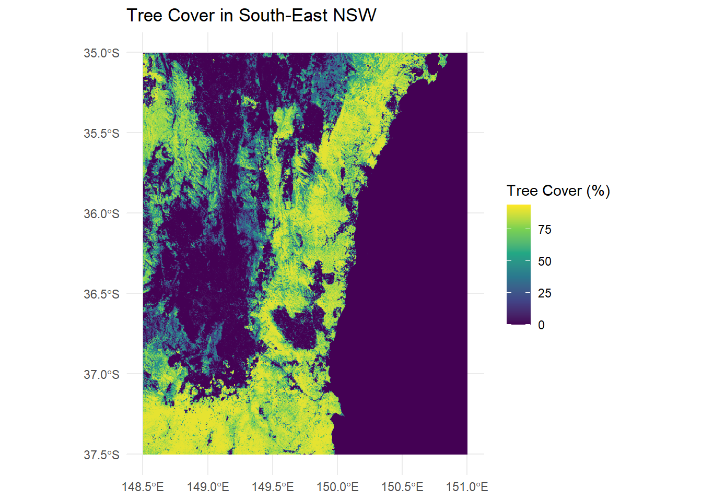
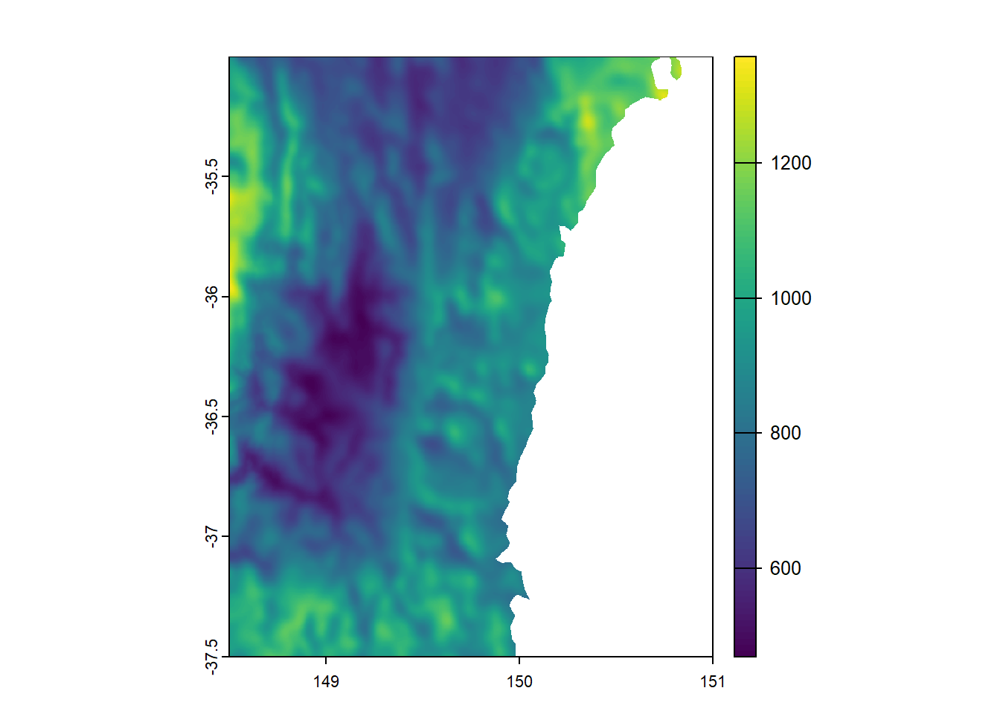
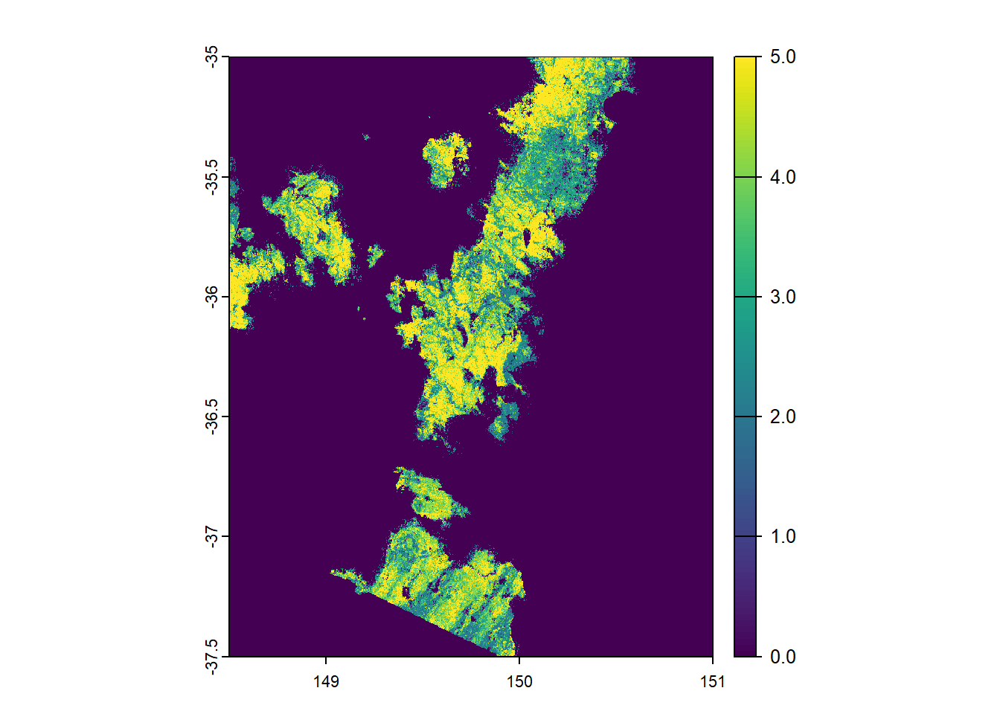
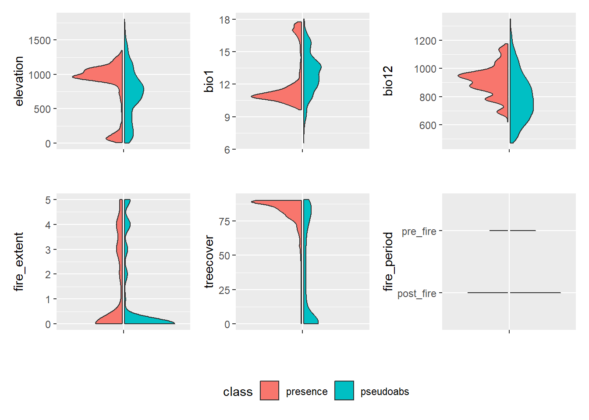
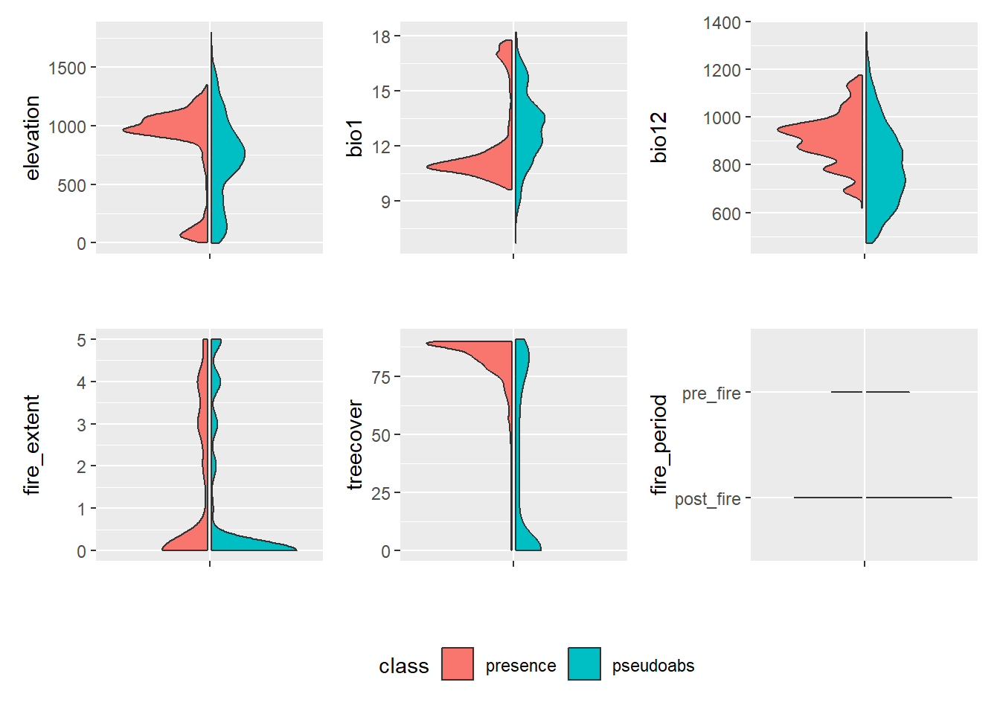
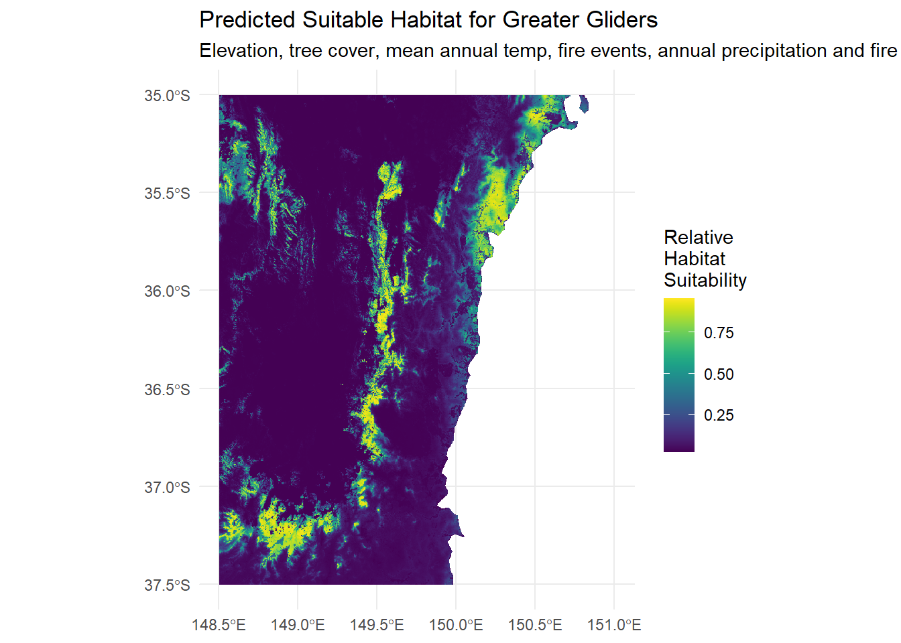

library(galah)
library(tidyverse)
library(tidymodels)
library(tidysdm) # devtools::install_github("EvolEcolGroup/tidysdm")
library(terra)
library(tidyterra)
library(here)
library(sf)
library(ozmaps)
library(elevatr)
library(geodata)
library(stacks)Bushfires are a frequent and natural aspect of Australia’s ecosystems. During 2019 we experienced an exceptionally large and dangerous fire season that impacted X amount of land over Y months. The impact of this fire on native wildlife has been well documented and studied. In this post we will be exploring the impact of these fire events on the Greater Glider (Petauroides volans), an arboreal species of Glider that is coming increasingly under threat from habitat loss and climate change.
To explore this impact we will be developing a species distribution model (SDM) using ALA data, tree cover data, climate data and data released by the NSW government. We will then perform a statistical analysis on this model and explore the impact of extent of fire and timing of fire on Glider Presence. For modelling, we will be developing our SDM using tidymodels, for a more in-depth look at the process of preparing and developing an SDM please check out this other fantastic ALA Labs post:
To begin, we can load some packages.
Downloading Greater Glider Data
First lets prepare all the regional data. We’re going to be focusing on a region of South-East NSW. We will set up a bounding box and pull in a map of Aus for later rendering and working with our rasters.
Now lets download Greater Glider records from 2014-2024 inside of our bounding box we created earlier. These records will be supplied by ALA. We will use that 4 year buffer period for either side of the fires to inform our investigation later. We will also add a new column in that will allow us to to see if a Glider record was seen before or after the fires.
---galah_config(email = "your-email-here") # Registered ALA email
# Collect all greater glider records between 2014 and 2024 for the region we defined
gliders <- galah_call() |>
identify("Petauroides volans") |>
filter(year >= 2014 & year <= 2024) |>
galah_apply_profile(ALA) |>
galah_geolocate(se_nsw_bbox, type = "bbox") |>
atlas_occurrences()
# Classify each glider record as pre or post fire
# Up to and including October 2019 is pre-burnt, all after that are post fire (Not exact)
gliders <- gliders |>
mutate(fire_period = if_else(eventDate <= as.Date("2019-10-31"), "pre_fire", "post_fire"))
# Create an sf object so we can draw it later
gliders_sf <- gliders |>
st_as_sf(coords = c("decimalLongitude", "decimalLatitude")) |>
st_set_crs(4326)Now we’ve got a nice dataset of Greater Glider observations over a period of time in the area we’re interested with, classified by pre or post fire. Now, we’ll start pulling in our raster data to help build up our model.
Preparing our rasters
This post will make heavy use of raster files, which are essentially grids of spatial data (each pixel has a value representing the information we’re interested in). If you would like to know more about rasters, I encourage you to check out the SDM post as it goes into great detail on rasters. An introduction to species distribution modelling using {tidysdm} & {tidymodels}
We will be performing a series of modifications to each raster throughout this post; cropping them to our region of interest, making sure they are all in the same projection and then resampling to make them have the same resolution. This process is slightly repetitive but when working with spatial data for modelling, it is critical to have the rasters in the same dimensions, resolution and projection. Without matching these, we can’t match pixel values exactly between each layer!
Download Elevation Raster
The first raster we’ll be grabbing is an elevation raster for our defined region, fortunately for us the {elevatr} package provides us with the handy get_elev_raster() function. When we call it we pass in our bounding box from earlier and get elevation data (in metres) back for our region!
Since we’ll be using multiple rasters in this post, we need to establish a “main” raster: one that defines our coordinate reference system (CRS) and resolution. The elevation raster has the coarsest resolution, so we’ll use it as our reference for aligning all other rasters.
# Download the base elevation data
elevation_data <- get_elev_raster(locations = bbox_sf, z = 9, prj = "EPSG:4326")
# Remove the ocean elevations as Greater Gliders are not strong swimmers
elevation_aligned <- elevation_data |>
terra::mask(aus)
# elevation_aligned is now a RasterLayer, so lets turn it back into a SpatRaster
elevation_aligned <- terra::rast(elevation_aligned)
# Ensure that it's in our desired projection
elevation_aligned <- terra::project(elevation_aligned, "EPSG:4326")
# Crop it down to our bounding box
elevation_aligned <- terra::crop(elevation_aligned, bbox_ext)
# This column is different everytime, but it's always of the format file<UID>
# So we'll just rename it to elevation for simplicities sake
colname <- names(elevation_aligned)
names(elevation_aligned) <- str_replace_all(names(elevation_aligned),
colname,
"elevation")Download Tree Cover Data
Next we’ll be downloading our tree cover data. This dataset is in the form of a percentage (0 = no cover, 100 = complete tree cover). Because our data set crosses over two regions, we will be stitching together two rasters that cover central NSW to the east coast, and we will then crop them down to our area of focus.
download.file("https://glad.umd.edu/Potapov/TCC_2010/treecover2010_30S_140E.tif", destfile="treecover2010_30S_140E.tif")
download.file("https://glad.umd.edu/Potapov/TCC_2010/treecover2010_30S_150E.tif", destfile="treecover2010_30S_150E.tif")Now that we have the files, let’s clean up the layer names, crop them to our study area, and merge them into one seamless raster.
# Load the raster
tree_cover_rast_150e_2010 <- rast("treecover2010_30S_150E.tif")
# Check the names of the layers in the raster
names(tree_cover_rast_150e_2010)[1] "treecover"# In this case we have one layer, and it's titled "Layer_1", which is not very helpful. So we'll change that to a more suitable name
names(tree_cover_rast_150e_2010) <- str_replace_all(names(tree_cover_rast_150e_2010),
"Layer_1",
"treecover")
# See the change has worked
names(tree_cover_rast_150e_2010)[1] "treecover"# Let's repeat the process for the 140E raster
tree_cover_rast_140e_2010 <- rast("treecover2010_30S_140E.tif")
names(tree_cover_rast_140e_2010)[1] "treecover"names(tree_cover_rast_140e_2010) <- str_replace_all(names(tree_cover_rast_140e_2010),
"Layer_1",
"treecover")
names(tree_cover_rast_140e_2010)[1] "treecover"# Crop our raster files to our bounding box extent
tree_cover_rast_150e_2010 <- tree_cover_rast_150e_2010 |>
terra::crop(bbox_ext)
tree_cover_rast_140e_2010 <- tree_cover_rast_140e_2010 |>
terra::crop(bbox_ext)
# Merge the two rasters into a single raster
tree_cover_2010 <- merge(tree_cover_rast_140e_2010, tree_cover_rast_150e_2010)
# We can now safely delete the first two raster files to save memory
rm(tree_cover_rast_140e_2010)
rm(tree_cover_rast_150e_2010)
# Resample our tree cover to the resolution of the elevation data
tree_cover_2010 <- terra::resample(tree_cover_2010, elevation_aligned)At this stage, we have an elevation raster and a tree cover raster, both cropped to the same study area and using the same projection. We only now need to do the same for our climate rasters, and our fire extent raster!
Download Climate Rasters
To help develop an accurate species distribution model, we’ll need to incorporate climate data. We’ll be using climate projections from CHELSA, specifically the UKESM1-0-LL SSP3-7.9 model for 2011-2040. This dataset provides bioclimatic variables at a reasonable resolution, making it a great choice for our analysis.
We’ll be focusing on two key variables:
- Bio1: Mean Annual Temperature
- Bio12: Mean Annual Precipitation
Greater gliders are sensitive to temperature and precipitation changes, and so these two variables are a sensible set to incorporate into our model to help understand their range.
First things first, let’s download and load the two raster files.
# Download our two raster files
download.file("https://os.zhdk.cloud.switch.ch/chelsav2/GLOBAL/climatologies/2011-2040/UKESM1-0-LL/ssp370/bio/CHELSA_bio1_2011-2040_ukesm1-0-ll_ssp370_V.2.1.tif", destfile="CHELSA_bio1_2011-2040_ukesm1-0-ll_ssp370_V.2.1.tif", mode="wb")
download.file("https://os.zhdk.cloud.switch.ch/chelsav2/GLOBAL/climatologies/2011-2040/UKESM1-0-LL/ssp370/bio/CHELSA_bio12_2011-2040_ukesm1-0-ll_ssp370_V.2.1.tif", destfile="CHELSA_bio12_2011-2040_ukesm1-0-ll_ssp370_V.2.1.tif", mode="wb") # Load our bio1 raster
bio1 <- rast("CHELSA_bio1_2011-2040_ukesm1-0-ll_ssp370_V.2.1.tif")
bio12 <- rast("CHELSA_bio12_2011-2040_ukesm1-0-ll_ssp370_V.2.1.tif")Just like we did with the tree cover data, we need to clean up these rasters: * Rename the layers to something more sensible * Crop them to match our region * Mask out the ocean (since Greater Gliders are not great swimmers) * Resample them to match our elevation raster resolution
# Crop to our bounding box extent
bio1 <- terra::crop(bio1, bbox_ext)
# Mask out the oceans
bio1 <- mask(bio1, aus)
# Check the name, and replace the horrible large name with something short and sweet
names(bio1)[1] "bio1"names(bio1) <- str_replace_all(names(bio1),
"CHELSA_bio1_2011-2040_ukesm1-0-ll_ssp370_V.2.1",
"bio1")
# Check to make sure our name is updated properly
names(bio1)[1] "bio1"# Resample our bioclim variable to the resolution of the elevation raster
bio1 <- terra::resample(bio1, elevation_aligned)
# And it's always a good idea to plot a raster to check it's all loaded correctly
plot(bio1)
# Repeat for our BIO12 raster
bio12 <- terra::crop(bio12, bbox_ext)
bio12 <- mask(bio12, aus)
names(bio12)[1] "bio12"names(bio12) <- str_replace_all(names(bio12),
"CHELSA_bio12_2011-2040_ukesm1-0-ll_ssp370_V.2.1",
"bio12")
names(bio12)[1] "bio12"bio12 <- terra::resample(bio12, elevation_aligned)
plot(bio12)
Now our climate rasters are ready to use, and we only need to incorporate the fire extent raster.
Download our Fire Extent Raster
We will now need to download our raster for the fire extent for 2019/2020 provided by the NSW Government
Prepare data
To assess the impact of the 2019-2020 Black Summer Bushfires, we need a raster that maps burnt areas across NSW for that period. The NSW Government’s Fire Extent and Severity Mapping (FESM) dataset provides this information: Fire Extent and Severity Mapping (FESM) 2019/20.
We will download the FESM v3-data in IMG and TIFF format, then extract the .tif file to our working directory.
The dataset categorises fire severity using the following range of values: * 0 - unburnt * 1 - Reserved - a.k.a not used right now in the raster * 2 - Low * 3 - Moderate * 4 - High * 5 - Extreme
Each pixel
Processing the fire raster
This raster is HUGE, waaaay bigger than we need, and so in the interest of time, we will be cropping and reducing it down just to our desired range a little differently to our previous rasters.
This raster is NOT in EPSG:4326 projection, so we are going to be doing the following steps: 1. creating an SpatExtent. 2. Reprojecting that to the extent of our fire map. 3. Creating a bounding box of that extent in that projection. 4. Cropping our fire extent raster in that projection. 5. Reprojecting the now cropped fire extent raster to the WGS84.
# Load the raster up. This raster is NOT in EPSG:4326 projection, so we are going to be doing the following steps:
# 1. creating an SpatExtent
# 2. Reprojecting that to the extent of our fire map
# 3. Creating a bounding box of that extent in that projection
# 4. Cropping our fire extent raster in that projection
# 5. Reprojecting the now cropped fire extent raster to the projection we use elsewhere
fire_extent <- rast("cvmsre_NSW_20192020_ag1l0.tif")
# We are going to make our extent a polygon so
bbox_ext_vect <- terra::as.polygons(bbox_ext, crs = "EPSG:4326")
# Reproject the bounding box to the same projection of fire_extent
bbox_ext_vect_proj <- terra::project(bbox_ext_vect, crs(fire_extent))
# Create a bounding box of that
bbox_ext_proj <- terra::ext(bbox_ext_vect_proj)
# Crop fire_extent using the reprojected bbox
fire_extent <- terra::crop(fire_extent, bbox_ext_proj)
# Reproject our fire extent to EPSG:4326
fire_extent <- terra::project(fire_extent, "EPSG:4326")
# Then crop back to align
fire_extent <- terra::crop(fire_extent, bbox_ext)
# Plot it to make sure we've done it all correctly!
plot(fire_extent)
Now that we’ve reduced this very large raster down, we will repeat similar steps to before * Rename the raster layer * Resample to match the elevation rasters resolution * Round out the values * Mask out the ocean regions
names(fire_extent) <- str_replace_all(names(fire_extent),
"Layer_1",
"fire_extent")
# Resample and round
fire_extent <- terra::resample(fire_extent, elevation_aligned)
fire_extent <- round(fire_extent)
# Mask out the ocean
fire_extent <- fire_extent |>
terra::mask(aus)Finally we are just going to add one more column to our glider observations, which will get the extent of the fire severity for the 2019 Bushfires at the location that glider was recorded at:
gliders_sf$burnt <- terra::extract(fire_extent, vect(gliders_sf), ID = FALSE)Now we have all our rasters ready to go, we can begin the modelling process!
Building our model
If you’re new to species distribution modeling (SDM) or want a deeper dive into the details, I highly recommend checking out this other fantastic ALA labs post that dives into the nitty gritty for each step: An introduction to species distribution modelling using {tidysdm} & {tidymodels}. This post is focused more with working with rasters, applying them to use in an SDM and exploring the output of the model statistically.
Combining our rasters
First things first, we need to combine all the raster datasets we’ve prepared so far. This will allow our model to extract environmental values at each Greater Glider occurrence (or absence).
combined_rasters <- c(elevation_aligned, bio1, bio12, fire_extent, tree_cover_2010)
# Make sure we have valid values in our columns
summary(combined_rasters) elevation bio1 bio12 fire_extent
Min. :-274.0 Min. : 6.35 Min. : 468.9 Min. :0.00
1st Qu.: 381.0 1st Qu.:11.66 1st Qu.: 696.8 1st Qu.:0.00
Median : 732.0 Median :13.02 Median : 821.0 Median :0.00
Mean : 684.5 Mean :13.13 Mean : 821.8 Mean :1.09
3rd Qu.: 943.0 3rd Qu.:14.45 3rd Qu.: 936.2 3rd Qu.:2.00
Max. :1881.0 Max. :18.19 Max. :1356.8 Max. :5.00
NA's :33158 NA's :33120 NA's :33120 NA's :33120
treecover
Min. : 0.000
1st Qu.: 0.000
Median : 1.363
Mean :29.023
3rd Qu.:70.679
Max. :91.515
Now we have a single raster with multiple layers detailing: * Elevation * Mean annual temperature (BIO1) * Mean annual precipitation (BIO12) * Extent of the 2019 bushfires * Tree cover
Thinning our data
Since raster cells have a fixed resolution, we want to avoid multiple glider observations within a single cell (because multiple observations below this level won’t matter anyway). We’ll use {tidysdm}’s thin_by_cell() function to make sure only one glider record exists per raster grid cell.
# see results of thinning
gliders_thin <- tidysdm::thin_by_cell(gliders_sf,
raster = combined_rasters)Pseudo-absences and Accurate Pre/Post-Fire Columns
What we currently have is a list of actual observations. Unfortunately in SDM we don’t often have true absence data to work with, just records of actual observations. To work around this, we will generate a bunch of pseudo-absences based off our combined raster.
We will then allocate 50% of the pseudo absence records as being pre-fire and 50% as being post-fire. This is because we don’t have a pre vs post fire period raster, which is what the sample_pseudoabs function uses to generate the potential pseudo-absences, but we would still like to incorporate that factor into our model.
After we’ve done that, we will then restore the pre and post-fire values for our actual observations in the dataset.
# Generate the pseudoabsence records
gliders_pseudoabs <- tidysdm::sample_pseudoabs(
gliders_thin,
n = 3 * nrow(combined_rasters),
raster = combined_rasters,
method = c("dist_min", km2m(5)))
# Calculate the number of rows so we can generate random categories
n_pseudo <- nrow(gliders_pseudoabs)
# Generate random categories for our pseudoabsences
pseudo_categories <- sample(c("pre_fire", "post_fire"), size = n_pseudo, replace = TRUE)
# Get the real categories from our original data
real_categories <- gliders_thin |>
select(fire_period) |>
mutate(class = "presence")
# Put the pseudo categories into our pseudoabsences
gliders_pseudoabs <- gliders_pseudoabs |>
mutate(fire_period = pseudo_categories)
# Extract the tree cover, elevation values and climate values at the pseudoabs points
gliders_events <- gliders_pseudoabs |>
bind_cols(
terra::extract(combined_rasters,
gliders_pseudoabs,
ID = FALSE))
# Join the real fire_period category from the original records to overwrite our fake ones
gliders_events <- gliders_events |>
st_join(real_categories |> select(fire_period), left = TRUE) |>
mutate(fire_period = coalesce(fire_period.y, fire_period.x)) |> # Overwrite only if match found
select(-fire_period.x, -fire_period.y) # Remove redundant columns
# Remove any NA records
gliders_events <- na.omit(gliders_events)Let’s now have a look at our predictor variables and see how they correlate to one another. Then we will select our predictor variables to filter out all the other records in our data frame. We will then turn our pre/post fire column into a numeric value for our modelling and statitical analysis later.
# Plot the effect of each variable on both presence and pseudoabsence records
gliders_events |>
plot_pres_vs_bg(class)
# Look at the names in our data frame and select the winners
names(gliders_events)[1] "class" "geometry" "elevation" "bio1" "bio12"
[6] "fire_extent" "treecover" "fire_period"predictor_vars <- c("elevation", "bio1", "bio12", "fire_extent", "treecover")
# Add in class and fire-period
gliders_filtered <-
gliders_events |>
select(all_of(c(predictor_vars, "class", "fire_period")))
# Change fire period into a numeric value
gliders_filtered <- gliders_filtered |>
mutate(fire_period = if_else(fire_period == "post_fire", 1, -1))
gliders_filtered$fire_period <- as.numeric(gliders_filtered$fire_period)Tuning and Running the Model
Now that we’ve cleaned and prepared our data and generated our pseudoabsence data, we’re ready to start modelling!
Rather than using a single mdoel, we’ll be training multiple models, investigating their relative performance, and then combining them into an ensemble model that will help make our final prediction a bit more robust.
Again if you’d like more information on the finer details of Species Distribution MOdelling using {tidysdm} and {tidymodels}, check out this ALA labs post: An introduction to species distribution modelling using {tidysdm} & {tidymodels}.
Training and testing
Firstly let’s split our glider presence/pseudoabsence data into training and testing datasets. Then to improve our model, we’ll use spatial block cross-validation to try and prevent our model from overfitting.
# set training and testing data
set.seed(100)
# Create training and testing datasets
gliders_split <-
gliders_filtered |>
initial_split()
gliders_split<Training/Testing/Total>
<5885/1962/7847>gliders_train <- training(gliders_split)
gliders_trainSimple feature collection with 5885 features and 7 fields
Geometry type: POINT
Dimension: XY
Bounding box: xmin: 148.5 ymin: -37.49949 xmax: 150.8232 ymax: -35.00099
Geodetic CRS: WGS 84
# A tibble: 5,885 × 8
elevation bio1 bio12 fire_extent treecover class fire_period
<dbl> <dbl> <dbl> <int> <dbl> <fct> <dbl>
1 668 13.5 676. 0 4.12 pseudoabs -1
2 976 11.2 861. 3 82.3 presence -1
3 1117 11.1 750. 3 45.1 pseudoabs 1
4 675 13.7 573. 0 0 pseudoabs 1
5 1082 10.9 672. 0 0 pseudoabs -1
6 126 17.2 1136. 2 83.3 pseudoabs -1
7 1571 8.45 1050. 5 0.353 pseudoabs -1
8 331 15.9 1081. 4 82.4 pseudoabs 1
9 479 15.6 1011. 5 72.7 pseudoabs 1
10 961 11.0 972. 3 51.3 presence -1
# ℹ 5,875 more rows
# ℹ 1 more variable: geometry <POINT [°]>gliders_test <- testing(gliders_split)
gliders_testSimple feature collection with 1962 features and 7 fields
Geometry type: POINT
Dimension: XY
Bounding box: xmin: 148.5 ymin: -37.49949 xmax: 150.7964 ymax: -35.00221
Geodetic CRS: WGS 84
# A tibble: 1,962 × 8
elevation bio1 bio12 fire_extent treecover class fire_period
<dbl> <dbl> <dbl> <int> <dbl> <fct> <dbl>
1 1153 10.9 699. 0 84.4 presence 1
2 987 10.7 956. 0 90.0 presence 1
3 1015 11.4 865. 0 53.9 presence 1
4 871 12.3 775. 3 78.3 presence 1
5 951 12.1 766. 4 64.1 presence 1
6 1026 11.5 786. 4 83.3 presence 1
7 942 10.7 917. 0 88.5 presence -1
8 951 11.0 918. 3 80.5 presence -1
9 981 10.7 934. 0 83.2 presence 1
10 1090 10.9 879. 4 89.2 presence -1
# ℹ 1,952 more rows
# ℹ 1 more variable: geometry <POINT [°]># Perform Cross validation
gliders_cv <- spatial_block_cv(gliders_train, v = 5)Now we’re going to create a new recipe for our model, this essentially will explain how our variables are used in the model.
We will be calculating the effect each variable has on the likelihood presence and absence, so our model knows what are the predictor variables: elevation, bio1, bio12, treecover, fire_extent and fire_period.
and what is the response variable: class which is either presence, or absence.
gliders_recipe <- recipe(
gliders_train,
formula = class ~ elevation + bio1 + bio12 + treecover + fire_extent + fire_period
)
gliders_recipeRather than relying on a single model, we’ll train up four and compare their performance. These models are: 1. Generalised Linear MOdel 2. Random Forest 3. Gradient Boosting Machine 4. Maximum entropy
We will later build an ensemble of the best models
gliders_models <-
# create the workflow_set
workflow_set(
preproc = list(default = gliders_recipe), # Use the same recipe for all
models = list(
glm = sdm_spec_glm(), # Generalised Linear Model
rf = sdm_spec_rf(), # Radom Forest
gbm = sdm_spec_boost_tree(), # Gradient Boosting Machine
maxent = sdm_spec_maxent() # Maximum Entropy
),
cross = TRUE # make all possible combinations
) |>
option_add(control = control_ensemble_grid())
gliders_models# A workflow set/tibble: 4 × 4
wflow_id info option result
<chr> <list> <list> <list>
1 default_glm <tibble [1 × 4]> <opts[1]> <list [0]>
2 default_rf <tibble [1 × 4]> <opts[1]> <list [0]>
3 default_gbm <tibble [1 × 4]> <opts[1]> <list [0]>
4 default_maxent <tibble [1 × 4]> <opts[1]> <list [0]>Now we’ll tune our models using the cross validation blocks we generated earlier.
set.seed(9999)
# Tune the model using cross validation
gliders_models_tune <-
gliders_models |>
workflow_map("tune_grid",
resamples = gliders_cv,
grid = 6, # number of tuning iterations
metrics = sdm_metric_set(), # Evaluate model performance
verbose = TRUE,
control = stacks::control_stack_grid()
)
gliders_models_tune# A workflow set/tibble: 4 × 4
wflow_id info option result
<chr> <list> <list> <list>
1 default_glm <tibble [1 × 4]> <opts[4]> <rsmp[+]>
2 default_rf <tibble [1 × 4]> <opts[4]> <tune[+]>
3 default_gbm <tibble [1 × 4]> <opts[4]> <tune[+]>
4 default_maxent <tibble [1 × 4]> <opts[4]> <tune[+]>autoplot(gliders_models_tune)
# See Metrics
collect_metrics(gliders_models_tune)# A tibble: 54 × 9
wflow_id .config preproc model .metric .estimator mean n std_err
<chr> <chr> <chr> <chr> <chr> <chr> <dbl> <int> <dbl>
1 default_glm Preprocesso… spatia… logi… boyce_… binary 0.755 5 0.145
2 default_glm Preprocesso… spatia… logi… roc_auc binary 0.854 5 0.0215
3 default_glm Preprocesso… spatia… logi… tss_max binary 0.601 5 0.0278
4 default_rf Preprocesso… spatia… rand… boyce_… binary 0.913 5 0.0282
5 default_rf Preprocesso… spatia… rand… roc_auc binary 0.933 5 0.0107
6 default_rf Preprocesso… spatia… rand… tss_max binary 0.752 5 0.0369
7 default_rf Preprocesso… spatia… rand… boyce_… binary 0.913 5 0.0469
8 default_rf Preprocesso… spatia… rand… roc_auc binary 0.933 5 0.0148
9 default_rf Preprocesso… spatia… rand… tss_max binary 0.753 5 0.0436
10 default_rf Preprocesso… spatia… rand… boyce_… binary 0.898 5 0.0297
# ℹ 44 more rowsset.seed(98765)Because we are using a collection of models, we can use stacks to combine the best models into an ensemble model that will help improve accuracy and generalisation.
gliders_stacked <-
stacks() |> # initialize the model stack
add_candidates(gliders_models_tune) |> # Add the tuned models
blend_predictions() |> # Blend their predictions
fit_members() # Fit the final model
# VIew the stacked model
gliders_stacked# A tibble: 5 × 3
member type weight
<chr> <chr> <dbl>
1 .pred_pseudoabs_default_maxent_1_4 maxent 3.76
2 .pred_pseudoabs_default_maxent_1_5 maxent 1.68
3 .pred_pseudoabs_default_rf_1_1 rand_forest 0.971
4 .pred_pseudoabs_default_rf_1_2 rand_forest 0.736
5 .pred_pseudoabs_default_maxent_1_3 maxent 0.235# Visualise each models contribution
autoplot(gliders_stacked, type = "weights")
We can then evaluate it’s performance:
# Predict probability of presence
gliders_test_predictions <-
gliders_test %>%
bind_cols(predict(gliders_stacked, .,
type = "prob",
save_pred = TRUE))
# Evaluate performance
gliders_test_predictions |>
sdm_metric_set()(truth = class, .pred_presence)# A tibble: 3 × 3
.metric .estimator .estimate
<chr> <chr> <dbl>
1 boyce_cont binary 0.958
2 roc_auc binary 0.972
3 tss_max binary 0.839gliders_test_predictions_class <-
gliders_test %>%
bind_cols(predict(gliders_stacked, .,
type = "class",
save_pred = TRUE))Generating Final Rasters
Now we’ve got a trained and tested model, we can now almost finally make our predictions!
THe last step we need to do is create a pseudo “fire-period” raster. We need this raster because our model only evaluates the impact of fire_period on the glider records, we didn’t have the need a raster of fire_period previously, however because we are producing a final raster, we DO need a raster that we can sample from in order to produce that prediction.
# Create an empty raster with the same dimensions as our combined raster
presence_raster <- rast(combined_rasters, nlyr = 1)
names(presence_raster) [1] "lyr1"values(presence_raster) <- NA
# Rename the layer for clarity
names(presence_raster) <- str_replace_all(names(presence_raster),
"lyr1",
"fire_period")
names(presence_raster)[1] "fire_period"# Convert glider observations into a vector to be sampled
gliders_vect <- vect(gliders_filtered)
# Rasterize the fire period from the glider points
fire_period_raster <- rasterize(gliders_vect, presence_raster, field = "fire_period", fun = "first")
names(fire_period_raster) <- str_replace_all(names(fire_period_raster),
"first",
"fire_period")
# Assign pre/post values to the cells
fire_period_raster[is.na(fire_period_raster) & (fire_extent == 0 | fire_extent == 1)] <- -1 # Pre-fire
fire_period_raster[is.na(fire_period_raster) & !(fire_extent == 0 | fire_extent == 1)] <- 1 # Post-fire
# Add this fire period raster into our raster stack
combined_rasters <- c(combined_rasters, fire_period_raster)
names(combined_rasters)[1] "elevation" "bio1" "bio12" "fire_extent" "treecover"
[6] "fire_period"Now we are finally ready to perform our final prediction!
# Perform our final prediction!
prediction_present <- predict_raster(gliders_stacked,
combined_rasters,
type = "prob",
wopt = list(steps=32))The final plot
Now let’s plot it, and have a look at our map detailing habitat suitability for our gliders!
ggplot() +
geom_spatraster(data = prediction_present,
aes(fill = .pred_presence)) +
scale_fill_whitebox_c(palette = "viridi",
na.value = NA) +
guides(fill = guide_colorbar(title="Relative\nHabitat\nSuitability")) +
labs(title="Predicted Suitable Habitat for Greater Gliders", subtitle = "Elevation, tree cover, mean annual temp, fire events, annual precipitation and fire period.") +
pilot::theme_pilot(grid="hv") +
theme(
legend.text = element_text(hjust = 0.5)) +
theme_minimal()
Finishing up: Statistical Analysis
Now let’s investigate the relative effect that each variable had on the final prediction raster:
# Join the prediction raster and our other rasters
final_raster <- c(prediction_present, combined_rasters)
names(final_raster)
# Construct a GLM
lm <- glm(.pred_presence ~ elevation + bio1 + bio12 + fire_extent + treecover + fire_period, data = final_raster)
summary(lm)[1] ".pred_presence" ".pred_pseudoabs" "elevation" "bio1"
[5] "bio12" "fire_extent" "treecover" "fire_period"
Call:
glm(formula = .pred_presence ~ elevation + bio1 + bio12 + fire_extent +
treecover + fire_period, data = final_raster)
Coefficients:
Estimate Std. Error t value Pr(>|t|)
(Intercept) -1.702e+00 4.050e-03 -420.3 <2e-16 ***
elevation 5.804e-04 1.268e-06 457.7 <2e-16 ***
bio1 9.032e-02 2.265e-04 398.7 <2e-16 ***
bio12 1.967e-04 8.569e-07 229.5 <2e-16 ***
fire_extent -3.382e-02 1.757e-04 -192.5 <2e-16 ***
treecover 3.495e-03 4.310e-06 810.9 <2e-16 ***
fire_period 4.365e-02 3.507e-04 124.5 <2e-16 ***
---
Signif. codes: 0 '***' 0.001 '**' 0.01 '*' 0.05 '.' 0.1 ' ' 1
(Dispersion parameter for gaussian family taken to be 0.03164991)
Null deviance: 134932 on 2825491 degrees of freedom
Residual deviance: 89426 on 2825485 degrees of freedom
(1391370 observations deleted due to missingness)
AIC: -1738072
Number of Fisher Scoring iterations: 2Breaking down the stats
This output can be a bit confusing, so lets break it down and analyse each to make more sense.
- P-values
Normally when analysing the output of a GLM we’d start with a p-value, which tells us the probability that the effect we’re seeing is because of random chance. But because we chose these variables for our model, their p-values are of course going to be very small. We already know they’re influencing glider distribution, so they don’t tell us too much
- Estimates
Next let’s look at estimate, estimate tells us how much each variable increases or decreases the likelihood of finding a glider:
- Positive estimate: Higher values of this variable increase the likelihood of glider presence.
- Negative estimate: Higher values of this variable decrease the likelihood of glider presence.
- Larger absolute values mean a stronger influence.
Standard Error Now we have standard error, standard error tells us how much uncertainty there is in the estimate. Because we have very low standard errors for all our variables, we can say that there isn’t much variability in our estimates, and we can be quite confident in them.
Effect size (t value) For our GLM, this t-value is the effect size, and it tells us how strong each variable is on the final prediction. The absolute value of the effect size tells us it’s strength, and whether it’s positive or negative tells us whether or not it’s associated with increased glider predicition chance, or decreased glider prediction chance.
So because of our small p-values and standard errors, lets look at the estimates and effect sizes and draw some conclusions about what our model says each variable is contributing to the distribution of Greater Gliders:
| Variable | Estimate | Effect Size (t) |
|---|---|---|
| Elevation | 0.0006578 - Higher elevation slightly increases the chance of finding a glider. | 485.27 - A strong predictor of Glider Presence. As elevation increases, we expect the likelihood of gliders being present to rise. |
| BIO1 (Mean Annual Temperature) | 0.1030 - Higher mean annual temperature increases the likelihood of glider presence (relative to other locations sampled in our region). | 425.44 - Another strong predictor. This should be considered within the context of all other variables. |
| BIO12 (Mean Annual Precipitation) | 0.0002668 - More rainfall slightly increases the predicted chance of glider presence. | 297.31 - Another positive predictor. When considered alongside tree cover and elevation, this makes sense as higher tree cover typically requires more precipitation. |
| Fire Extent | -0.03244 - More extreme fire events in 2019 decrease the likelihood of glider presence. | -172.83 - A reasonably strong negative predictor. Our model suggests that as fire severity increases, the likelihood of glider presence decreases. |
| Tree Cover | 0.003676 - More tree cover increases glider presence (as expected, since they are arboreal). | 797.97 - This is the strongest predictor of Glider presence in our model. |
| Fire Period (Before or After) | 0.02963 - Fire period slightly influences glider presence. | 78.99 - The weakest predictor in our model, but it still plays a role in determining glider presence. |